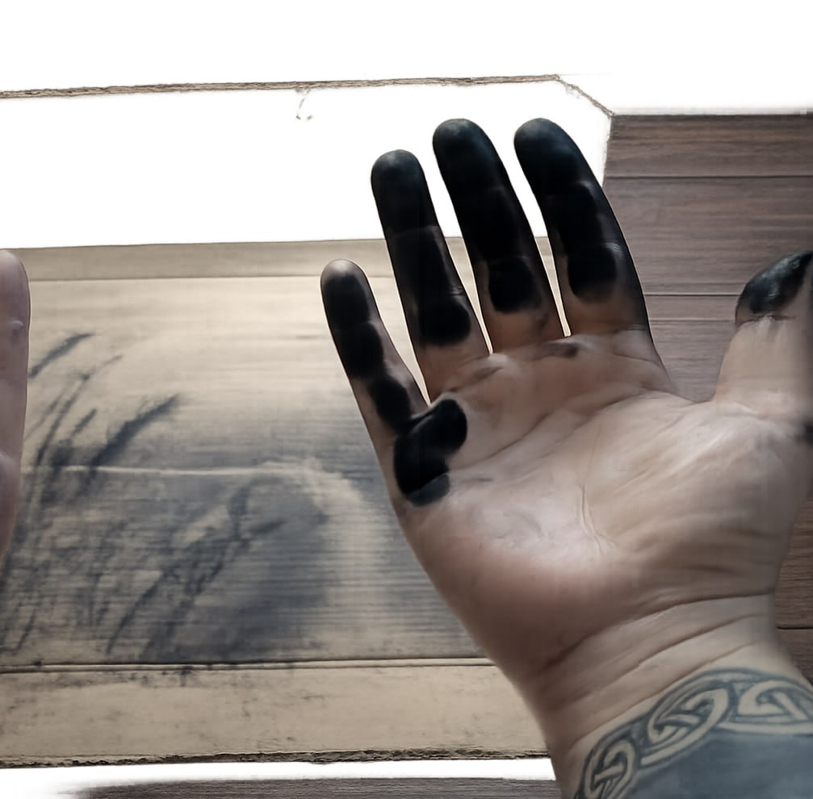
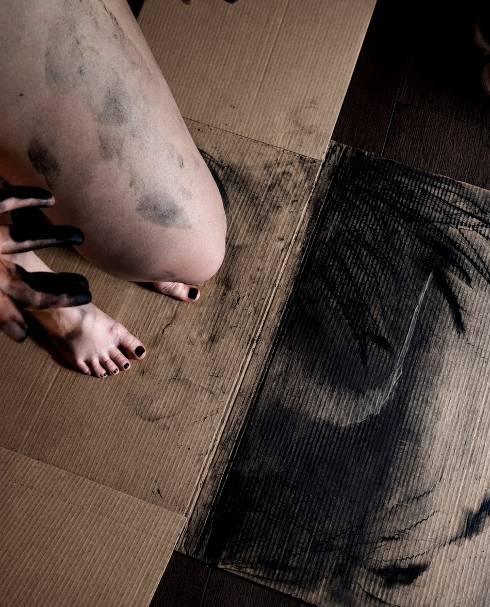
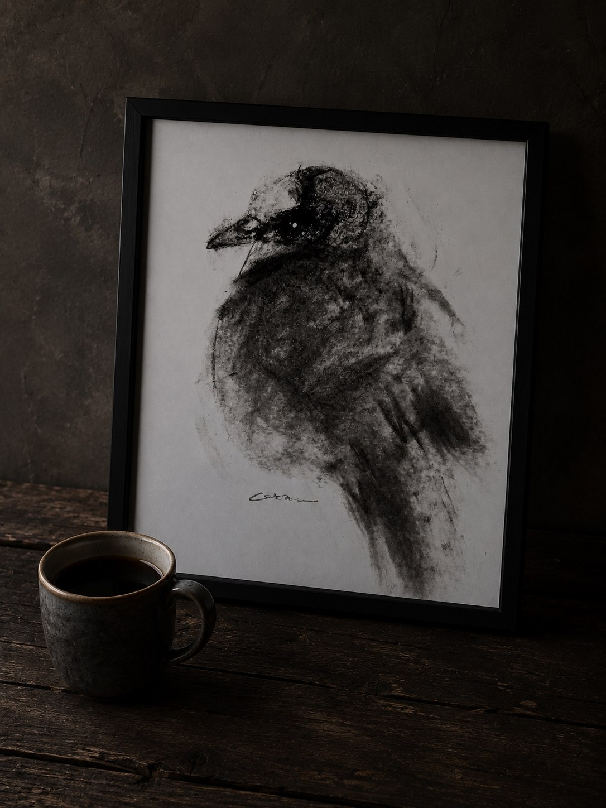

Ich arbeite mit Kohle auf Wellpappe. Mich interessiert der Bildträger
nicht nur als Untergrund, sondern als aktiver Bestandteil des Bildes.
Die charakteristische Struktur der Pappe bleibt bewusst sichtbar und
tritt mit der Kohle in einen Dialog.
Die feinen Rillen nehmen Licht und Schatten auf, brechen die Oberfläche
und verleihen den Zeichnungen eine besondere Materialität. Sie erinnern
an gealterte Fotografien, an Spuren der Zeit oder an verblassende
Erinnerungen. Dadurch entsteht eine Atmosphäre, in der sich Formen nicht
eindeutig festlegen, sondern zwischen Sichtbarkeit und Auflösung bewegen.
Die Kohle eignet sich für diese Arbeitsweise besonders, weil sie sowohl
tiefes Schwarz als auch feinste Grauabstufungen ermöglicht. In Verbindung
mit der Wellpappe entstehen Bilder, die weniger beschreiben als andeuten.
Figuren, Landschaften und Orte scheinen aus dem Material hervorzutreten
und zugleich wieder darin zu verschwinden.
Die Wahl der Wellpappe ist daher keine ungewöhnliche Materialentscheidung
um ihrer selbst willen. Sie ist ein wesentlicher Bestandteil meiner
künstlerischen Sprache. Die Oberfläche trägt die Bildidee mit und macht
Vergänglichkeit, Erinnerung und Wahrnehmung sichtbar.

Mein Arbeitsprozess ist körperlich, direkt und materialbezogen. Ich arbeite auf Papier und Karton, bei größeren Formaten vor allem mit Chunky-Kohlesticks und Reiskohlestäbchen. Die Kohle wird nicht nur gezeichnet, sondern mit den Händen, Armen und dem gesamten Körper über die Oberfläche bewegt und verrieben. So entstehen Spuren, die aus einer unmittelbaren körperlichen Handlung hervorgehen.
Das bewusste Wahrnehmen des Materials ist ein zentraler Bestandteil meiner Arbeit. Ich möchte die Kohle nicht nur als Zeichenmedium einsetzen, sondern ihre Beschaffenheit, ihren Widerstand und ihre Flüchtigkeit erfahren. Durch den direkten Kontakt bleiben ihre Spuren auch auf meiner Haut sichtbar. Mein Körper wird damit selbst zum Werkzeug und zugleich zum Teil des künstlerischen Prozesses. Die Grenzen zwischen Material, Handlung und Körper lösen sich auf – die Zeichnung entsteht aus ihrer gegenseitigen Wechselwirkung.


Meine Arbeiten beginnen nicht mit einer festen Idee, sondern mit Stille. Bevor ich zu zeichnen beginne, weiß ich meist nicht, was entstehen wird. Ich setze mich hin, nehme mir Zeit und lasse alles langsam in den Hintergrund treten. Das Zeichnen ist für mich ein meditativer Prozess – ein Zustand der Aufmerksamkeit, in dem Gedanken ruhiger werden und Bilder allmählich auftauchen. Ich versuche nicht, ein Motiv zu erzwingen. Stattdessen folge ich dem, was sich in diesem Moment zeigt. Erst in dieser Ruhe und Offenheit entwickeln sich Formen, Landschaften oder Figuren. So entsteht jedes Bild als Begegnung mit dem Unbekannten – getragen von Stille, Intuition und dem Vertrauen in den Prozess.